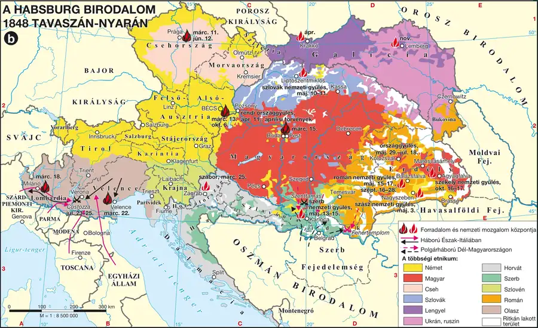

Előzmény: az 1830-as forradalmi hullám
1830-ban Franciaországban a „júliusi forradalom” elsöpörte a Bourbon-restaurációt, Belgium elszakadt a Németalföldi Királyságtól, a lengyel területeken pedig felkelés tört ki a cári hatalom ellen — ezt az orosz csapatok 1831-ben leverték. Ezek a mozgalmak jelezték, hogy a Szent Szövetség rendszere nem tarthatja fenn korlátlanul a status quót.
1848: a „népek tavasza”
1848 tavaszán újabb, ezúttal az egész kontinenst érintő forradalmi hullám söpört végig Európán. Okai között szerepelt Európa országainak eltérő fejlettségi szintje (a szélsőségek — az élenjáró Anglia és Hollandia, illetve a leghátrébb lévő Oroszország — kimaradtak a forradalmakból), a társadalmi feszültségek, a francia minta vonzereje, valamint az 1840-es évek élelmezési, ipari túltermelési és pénzügyi válsága. A forradalom Itáliából indult, majd Franciaországot is elérve láncreakciót váltott ki egész Európában — a Habsburg Birodalomban Bécs (március 13.), majd Pest (március 15.) következett.
A forradalmak jellemzően négy szakaszon mentek keresztül: (1) az ellenzéki erők közösen megdöntötték a fennálló kormányzatokat; (2) a liberálisok kiváltak, megbomlott a forradalmi tábor egysége; (3) a radikálisok és munkások próbálták folytatni a forradalmat, de többnyire leverték őket; (4) végül felülkerekedett az ellenforradalom.
Fontos megkülönböztetés: a magyar forradalmi folyamat nem illeszkedett pontosan a fenti négyes sémába — a pesti forradalom kivételesen vér nélkül, gyorsan győzött, és Magyarország volt az egyetlen ország, amely 1849-ben, az európai forradalmak bukása után is folytatta a fegyveres küzdelmet.
| Fogalmak | Személyek | Kronológia | Topográfia |
|---|---|---|---|
| — | Metternich E | 1848. febr. 23. párizsi forradalom E; 1848. márc. 13. bécsi forradalom E | Párizs E; Bécs E |
A Habsburg Birodalom 1848 tavaszán–nyarán
A forradalmi hullám, a nemzetiségi mozgalmak és a birodalom politikai válsága térben értelmezhető.

1. forrás — Az 1848-as európai forradalmi hullám jellemzői (tartalmi kivonat)
A leírás szerint az 1848-as forradalmak közös vonása volt az alkotmányos-parlamenti berendezkedés és a nemzeti önállóság követelése — miközben minden országban más társadalmi csoport (Franciaországban a munkásság, Itáliában a liberálisok, a Habsburg Birodalomban a polgárság és a liberális nemesség) állt a mozgalmak élén, és a kiváltó okok is országonként eltértek (Franciaországban a választójog kiszélesítésének igénye, Itáliában az egyesítés vágya, a Habsburg Birodalomban a nemzeti önállóság követelése).
a) Mi volt a forradalmak közös célja az eltérő országokban?
b) Milyen társadalmi csoportok álltak az egyes országok mozgalmainak élén?
c) Miért fontos, hogy a kiváltó okok országonként különböztek?
Ellenőrző feladatok
Állítás: Az 1848-as forradalmi hullám Angliát és Oroszországot is elérte.
Honnan indult ki az 1848-as forradalmi hullám, mielőtt Franciaországot is elérte?
Egészítsd ki: A bécsi forradalom kitörésének napja 1848. március ______.